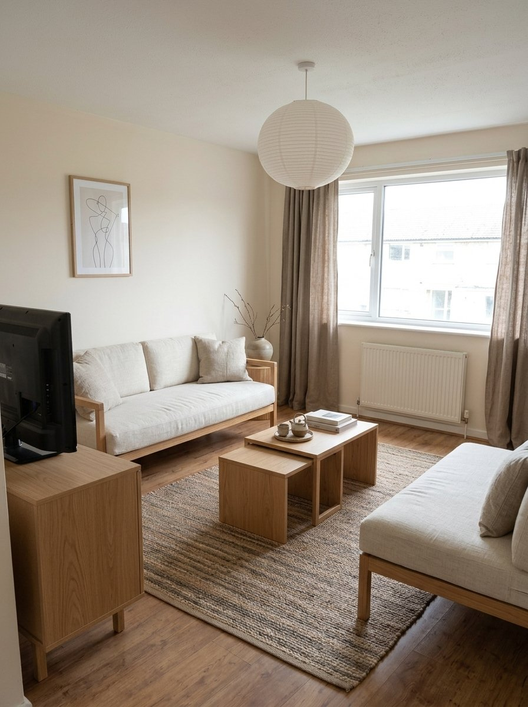
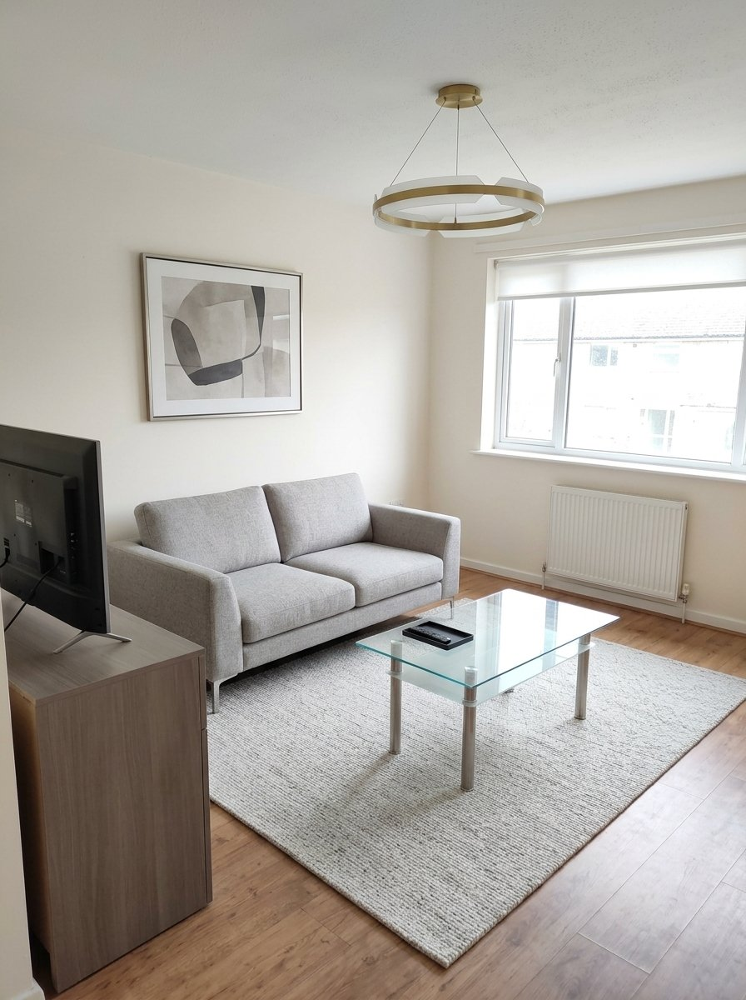
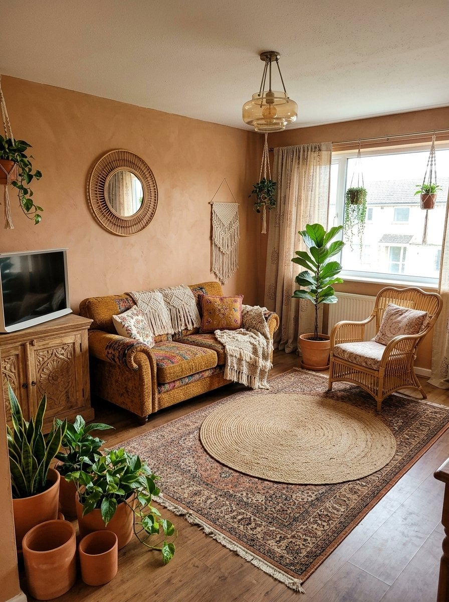
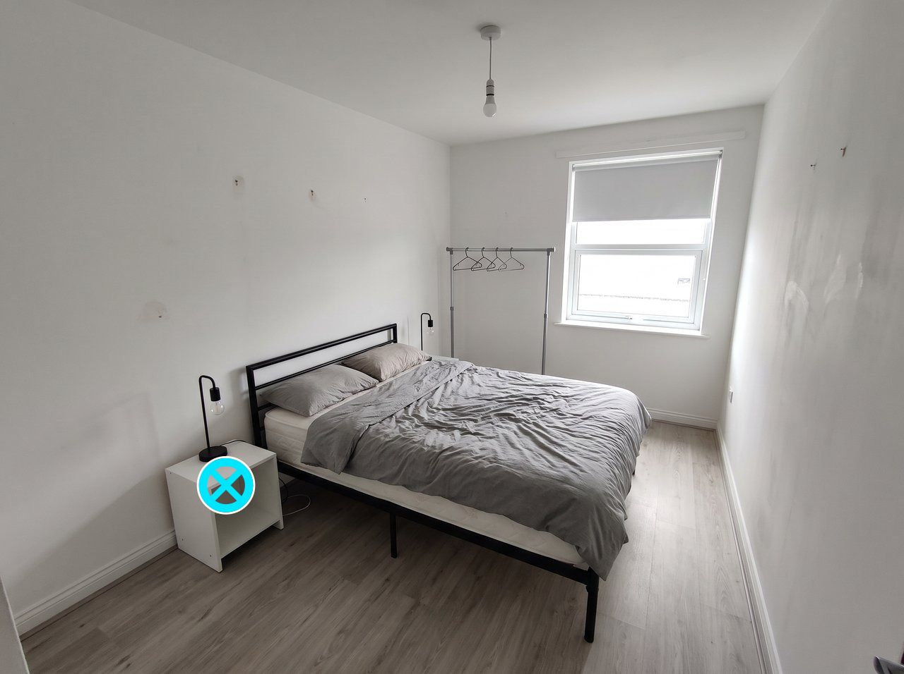
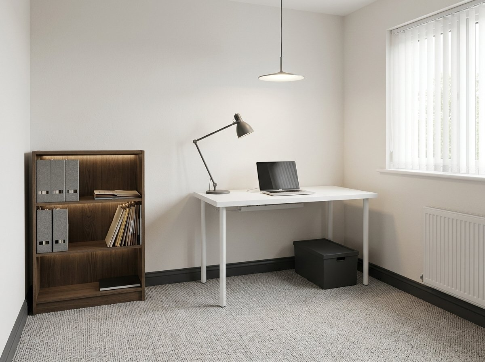
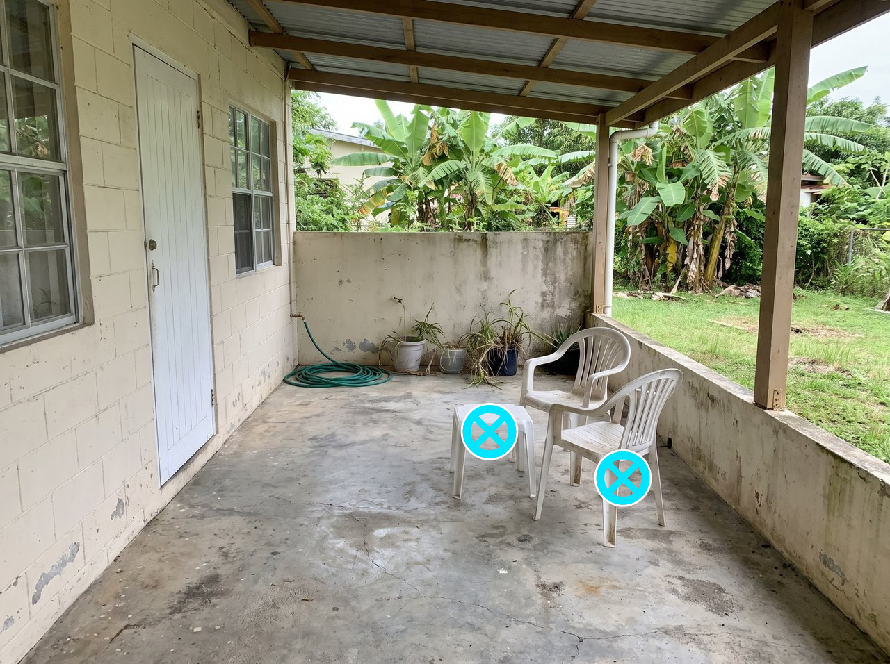
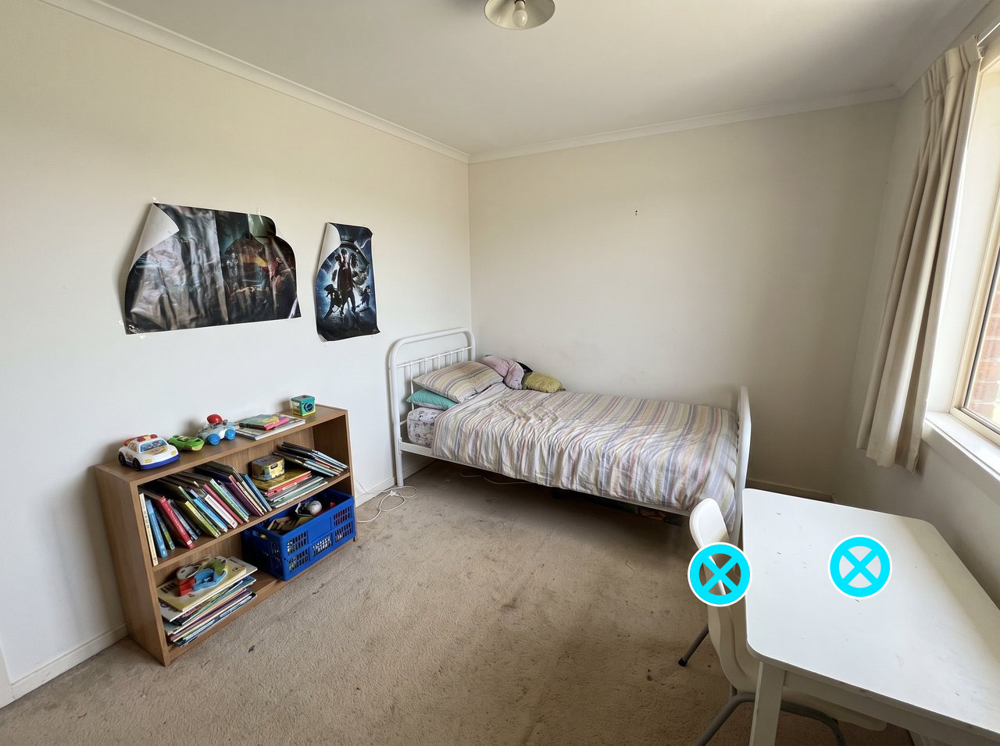

Japandi without the armchair (failed on the phone Nov 19)

Modern minimal without the armchair


Boho without the glass coffee table


Scandinavian without the nightstand


Modern minimal without the office chair and the box


Tropical modern terrace without the plastic table and one chair


Japandi without desk and chair (repeat)
